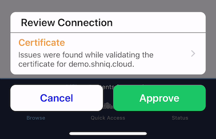
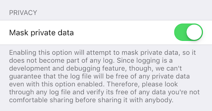

Security
Introduction
This guide steps you through the security features of of ownCloud’s Mobile App for iOS. in the new ownCloud iOS SDK and new ownCloud iOS App.
Authentication
API
The ownCloud iOS SDK (2018) is a general-purpose API for implementing passphrase- and token-based authentication methods, which provides three key benefits. These are:
Secrets
Authentication secrets contain information such as usernames, passwords or tokens, and are
generated by the respective authentication method implementation. Authentication Secrets are securely
stored in the app’s Keychain and tagged as
AccessibleAfterFirstUnlock.
They cannot be accessed after a restart until the device has been unlocked once by the user.
Supported Methods
Authentication method implementations are available for OAuth2 and Basic Authentication.
Method Selection
After performing auto-detection, identified authentication methods are filtered and ranked by preference. The method with the highest ranking is then picked for the user.
| By default, all detected methods are considered and OAuth2 ranks higher than Basic Authentication. |
Filtering and ranking can be customized by MDM Configuration. This, for example, allows making OAuth2 the only possible authentication method, so no credentials need to be stored on the device.
OAuth2 Implementation
The OAuth2 implementation uses SFAuthenticationSession, which is described as a best practice by RFC 8252 - when running under iOS 11. Under iOS 12, the OAuth2 implementation uses ASWebAuthenticationSession, which is the successor of SFAuthenticationSession. Benefits of using these APIs include:
-
Privilege separation: web content is run in a separate process
-
Trustworthiness: apps can’t inject code into or access the contents of the web view
-
Convenience for the user: cookies from Safari are available to the web content inside the session
Connections
URL Limits
Using MDM Configuration, server URLs can be pre-filled or "hard-coded" as the only allowed server URL.
Redirects
Redirects during login are not followed silently. Instead, they are reported to the user and must be explicitly approved.
SSL/TLS Certificates
When adding servers, users have the opportunity to view a detailed summary of the server’s SSL/TLS certificate before they are prompted for credentials or authentication via OAuth2.
If a SSL/TLS certificate fails trust evaluation (e.g., because it’s self-signed or signed by an unknown Certificate Authority), the user is given an opportunity to:
-
View a detailed summary of the certificate, by clicking on the notification.
-
Trust the certificate, despite the warnings, by clicking Approve.
-
Reject the certificate, by clicking Cancel.

In the case of redirects across several HTTPS servers, users are given the opportunity to review the certificates of all servers involved in addition to the redirects.
|
MDM Configuration support is planned for:
|
Inspecting Certificate Details
If users want to inspect the details of an approved security certificate, from the Accounts list, swipe left on the account that you want to check the certificate of and click Edit. Then, click the row Certificate Details. You will then see the certificate’s details, starting with the validation status.
More Information
For more information, please refer to the security information.
Data
Separation
Separate directories are used for the data of every server connection. This provides the following benefits:
-
A strong barrier against accidentally spilling data between different connections.
-
All data relating to a connection can be deleted by deleting the respective directory.
Encryption
The app uses the filesystem encryption built into iOS. Using the CompleteUntilFirstUserAuthentication file protection, data can’t be accessed after a restart until the device has been unlocked once by the user.
Sync
The Sync Strategies, planned to be used in the app, focus on preventing data loss locally and remotely.
Secure Document View
HTML and Microsoft Office document content is viewed using WKWebView, which renders the content in a separate process. Additional hardening is achieved by disabling JavaScript and blocking all network requests, which protects against lesser known, non-obvious attacks like CSS Keylogging.
Passcode
Users can set a Passcode to control access to the app. Find out more about this in the Passcode section of the Settings documentation.
Miscellaneous
Continuous Integration (CI)
Continuous Integration tests verify that central security mechanisms and assumptions work as expected, covering areas such as redirections, certificate handling, common Man-in-the-middle (MITM) attack scenarios, and the secure storage of authentication secrets.
SQL Injection
To protect against SQL injection attacks, parameters are never made part of the SQL statements themselves. Instead, placeholders are used and the parameters are subsequently bound to the SQL statements. For example, instead of running a query, such as SELECT * FROM users WHERE name='John Doe', the query would be parameterised, such as: SELECT * FROM users WHERE name=:nameToSearchFor.
Reproducibility
The build script that created the OpenSSL binaries used in the app is available in the SDK’s GitHub repository and can be used to reproduce the build result.
| OpenSSL is used solely to provide detailed summaries of SSL/TLS certificates - functionality that iOS is currently missing. |
Planned Logging Feature (not included in released yet!!)
When logging information, parts of the log message can be tagged as private. If "Mask private data" is enabled, under (it is by default), these parts will be - before the log message is written - either replaced with «private» or a trimmed version that doesn’t contain privacy-sensitive information.
An example for the latter would be an NSError object’s error message containing the names of the item it is about. If masked, only the error’s error domain and error code are written to the log, but not the error message.
